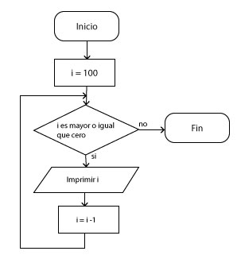
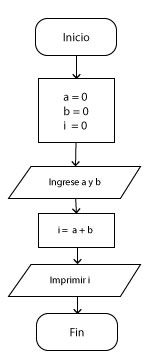

Taller estudio parcial #2
Taller de estudio para preparar el primer parcial, no es necesario entregarlo, ni se calificará. Se recomienda estudiarlo y leerlo completamente, para que conozca el tipo de preguntas que encontrará en el examen.
Taller de estudio - Ejercicios
1. Escriba un programa que calcule el factorial de un número, tenga en cuenta los casos especiales y controle errores en tiempo de ejecución, realice varias pruebas y conteste.
- ¿Qué tipo de variable es el más indicado para solucionar este ejercicio?
- ¿Qué pasa con el factorial de 4, 15, 20, 100, 1000?
- Hay algún valor que arroje comportamientos inesperados
- Conclusiones de las pruebas
2. Realice un programa que calcule las raices reales usando la fórmula del estudiante, tenga en cuenta los casos especiales y controle errores en tiempo de ejecución.
Taller de estudio - Ejercicios
3. Realice el diagrama y el programa que permita calcular los divisores de un número n donde n es entero mayor a 0.
4. Programa que descomponga un número en unidades, decenas y centenas, debe funcionar para números de 1 hasta 1'000.000.
5. Diagrama y programa que lea un número entero entre 5000 y 10000 e imprima el número invertido (* No se puede usar arrarys)
Ejemplo: 6345 ----> imprime 5436.
Taller de estudio - Ejercicios
6. Programa que imprima los número pares de m hasta n, donde m > n, calcule el promedio de los número impares y la suma de los números primos.
7. Programa que sume los dígitos de un número hasta que solo quede un dígito, debe funcionar para números de 100 hasta 1'000.000. Y se debe mostrar la operación como se muestra en el ejemplo.
Ejemplo:
- 5112 ---> 5 + 1 + 1 + 2 = 9 OK
- 62398 ---> 6 + 2 + 3 + 9 + 8 = 28 Queda un número de dos dígitos
---> 2 + 8 = 10 Queda un número de dos dígitos
---> 1 + 0 = 1 OK
Taller de estudio - Ejercicios
8. Escriba la sintaxis necesaria para realizar conversiones entre los siguientes: string, int, float, bool.
9. Escriba un programa que imprima números de 1 ---> 1000 use: while para los números de 1 hasta 100, luego un for para los números de 101 hasta 500, y por último un do while para los números de 501 hasta 1000, utilice la misma variable en todas las estructuras de control.
Taller de estudio - Ejercicios
10. 2 elevado a las 15 es igual a 32768 y la suma de sus digitos es 3 + 2 + 7 + 6 + 8 = 26. ¿Cuál es la suma de los digitos de 2 elevado a 10000? Resuelva usando múltiplicaciones sucesivas.
11. Un triple de pitagoras es un conjunto de tres números naturales, a<b<c, para los cuales:
a*a + b*b = c*c
Ejemplo 3*3 + 4*4 = 9 + 16 = 25 = 5*5
Existe exactamente un triple de pitagoras para el cual a + b + c = 1000 encuentre el producto de a*b*c.
Taller de estudio - Calcular el valor de la i
Prueba de escritorio, calcule el valor de la i. (Click en la imagen para agrandar)
Taller de estudio - Calcular el valor de la i
Taller de estudio - Teoría
- ¿Qué es una variable?
- ¿Qué es una palabra reservada?
- Escriba una lista de 20 palabras reservadas.
- ¿Qué es desbordamiento?, ¿Por qué se presenta?
Taller de estudio - Teoría
- Escriba 5 buenas prácticas para escoger el nombre de una variable.
- Explique para que se usa el casting en programación (recuerde: En programación no hay actores)
- Escriba 20 condicionales usando operadores de relación, booleanos y operadores alfanuméricos.
- Escriba 3 tipos diferentes de operadores de asignación y explique su significado.
Taller de estudio - Teoría
- ¿Qué diferencia existe entre el operador incremento y el operador posincremento?
- ¿Qué es un dato primitivo? Escriba 5 ejemplos de estos datos.
- ¿Qué es el operador ternario y como funciona en c sharp? Escriba un ejemplo.
- ¿Explique por qué es importante usar el tipo de dato adecuado?, escriba tres ejemplos
Taller de estudio - Teoría
Explique y ejemplifique los siguientes errores.
- Tiempo de ejecución
- Compilación
- Lógico
- Sintaxis